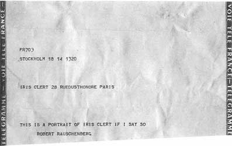
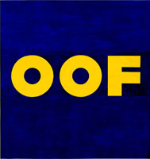
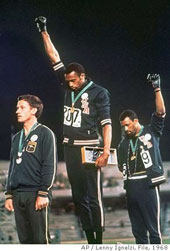
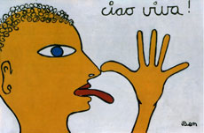
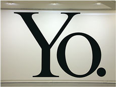

Performatives
Robert Rauschenberg:
"This is a portrait of Iris Clert if I say so"
1961

 Edward Ruscha: "Oof" – 1963
Ben Vautier: "Malheur à par qui le scandale arrive"
Christopher Wool: "Fuckem if they can't take a joke" – 1992
 Peter Norman, Tommie Smith, John Carlos: The Black Panther Salute, 1968
Klaus Staeck: Wir setzen uns durch, 1968
 Ben Vautier: "Ciao viva!" – 1984
Ian Hamilton Finlay: "Je vous salue Marat" – 1990

Haim Steinbach: "Yo." – 2004
Tracey Emin: "I kiss you" – 2006